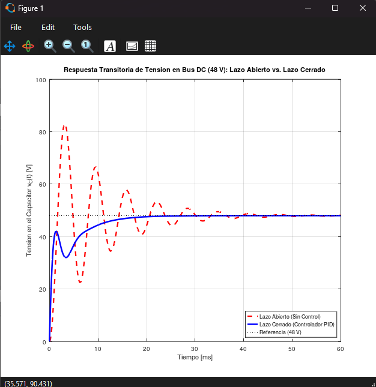
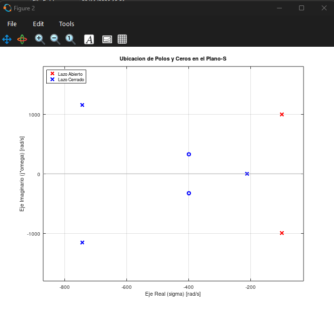

Contexto Industrial y Arquitectura de Control
En una microred solar fotovoltaica de corriente directa (DC), la generación primaria varía constantemente debido a cambios en la irradiancia solar y la temperatura ambiente. Para mantener un bus DC regulado (por ejemplo a $V_{\text{ref}} = 48\text{ V}$) capaz de alimentar cargas industriales críticas sin sobretensiones, se utiliza un convertidor conmutado Buck seguido de un filtro pasabajas $LC$ acoplado a una carga resistiva equivalente $R$.
Diagrama de Lazo Cerrado de la Microred Solar
Modelado Matemático Físico (Leyes de Kirchhoff)
Circuito Equivalente Promediado
El modelo promediado del convertidor en conducción continua es lineal respecto a las variables de almacenamiento de energía $i_L(t)$ y $v_C(t)$.
Paso 1: Ley de Voltajes de Kirchhoff (LVK) en la malla de entrada
La tensión aplicada $u(t)$ equivale a la caída en el inductor más la tensión del capacitor:
$$u(t) = L\frac{di_L(t)}{dt} + v_C(t) \implies \frac{di_L(t)}{dt} = -\frac{1}{L}v_C(t) + \frac{1}{L}u(t)$$Paso 2: Ley de Corrientes de Kirchhoff (LCK) en el nodo de salida
La corriente del inductor se divide entre el capacitor y la resistencia de carga $R$:
$$i_L(t) = C\frac{dv_C(t)}{dt} + \frac{v_C(t)}{R} \implies \frac{dv_C(t)}{dt} = \frac{1}{C}i_L(t) - \frac{1}{RC}v_C(t)$$Formulación en Espacio de Estados y Función de Transferencia
Representación Matricial $\dot{\mathbf{x}} = \mathbf{A}\mathbf{x} + \mathbf{B}u$, $\;y = \mathbf{C}\mathbf{x} + \mathbf{D}u$
Definiendo el vector de estados $\mathbf{x}(t) = \begin{bmatrix} i_L(t) & v_C(t) \end{bmatrix}^T$ y la salida $y(t) = v_C(t)$:
Función de Transferencia Equivalente $G(s) = \mathbf{C}(s\mathbf{I}-\mathbf{A})^{-1}\mathbf{B} + \mathbf{D}$
$$G(s) = \frac{\dfrac{1}{LC}}{s^2 + \dfrac{1}{RC}s + \dfrac{1}{LC}} = \frac{1\,000\,000}{s^2 + 200s + 1\,000\,000}$$Diagrama de Simulación en Espacio de Estados (Bloques $s^{-1}$)
Estructura de doble integrador acoplado: la corriente $i_L$ integra la diferencia entre entrada y tensión de salida, mientras $v_C$ integra la corriente neta del capacitor.
Simulador Web Interactivo & Validación en GNU Octave
Laboratorio Virtual en Tiempo Real (Bus DC = 48 V)
Modifica los parámetros físicos del filtro RLC y las ganancias del controlador PID para observar la respuesta al escalón y el desplazamiento de polos.
Parámetros Físicos de la Planta
Sintonización Controlador PID
% =========================================================================
% PROYECTO DE INVESTIGACIÓN APLICADA - ANÁLISIS DE SISTEMAS (ELEC-5308)
% Tema 8: Regulación de Tensión en Convertidores RLC para Microredes Solares
% =========================================================================
clear all; close all; clc;
pkg load control;
% 1. PARÁMETROS FÍSICOS NOMINALES DE LA MICRORED SOLAR
L = 2e-3; % Inductancia del filtro [H] (2 mH)
C = 500e-6; % Capacitancia del filtro [F] (500 uF)
R = 10; % Resistencia equivalente de carga [Ohm]
V_ref = 48; % Tensión nominal del bus DC de la microred [V]
% 2. FORMULACIÓN EN ESPACIO DE ESTADOS (x1 = i_L, x2 = v_C)
A = [ 0, -1/L;
1/C, -1/(R*C) ];
B = [ 1/L;
0 ];
C_mat = [ 0, 1 ];
D = 0;
sys_ss = ss(A, B, C_mat, D);
G_s = tf(sys_ss);
disp('--- MATRIZ A Y AUTOVALORES (POLOS LAZO ABIERTO) ---');
disp(A);
polos_LA = eig(A)
% 3. DISEÑO DEL CONTROLADOR EN LAZO CERRADO (PID Sintonizado)
Kp = 1.2;
Ki = 400;
Kd = 0.0015;
s = tf('s');
C_s = Kp + Ki/s + Kd*s;
T_s = feedback(C_s * G_s, 1);
disp('--- POLOS Y CEROS EN LAZO CERRADO ---');
polos_LC = pole(T_s)
ceros_LC = zero(T_s)
% 4. SIMULACIÓN DE RESPUESTA AL ESCALÓN (Bus DC de 48 V)
t = 0:0.0001:0.06;
[y_LA, t_LA] = step(V_ref * G_s, t);
[y_LC, t_LC] = step(V_ref * T_s, t);
overshoot_LA = ((max(y_LA) - y_LA(end)) / y_LA(end)) * 100;
overshoot_LC = ((max(y_LC) - y_LC(end)) / y_LC(end)) * 100;
fprintf('\nValor final Lazo Abierto: %.2f V | Pico Max: %.2f V | Sobreimpulso: %.2f%%\n', ...
y_LA(end), max(y_LA), overshoot_LA);
fprintf('Valor final Lazo Cerrado: %.2f V | Pico Max: %.2f V | Sobreimpulso: %.2f%%\n', ...
y_LC(end), max(y_LC), overshoot_LC);
% 5. GRÁFICA 1: COMPARACIÓN DE RESPUESTA AL ESCALÓN
figure(1);
plot(t_LA*1000, y_LA, 'r--', 'LineWidth', 2); hold on;
plot(t_LC*1000, y_LC, 'b-', 'LineWidth', 2.2);
plot([0 60], [V_ref V_ref], 'k:', 'LineWidth', 1.2);
grid on;
title('Respuesta Transitoria de Tension en Bus DC (48 V): Lazo Abierto vs. Lazo Cerrado');
xlabel('Tiempo [ms]');
ylabel('Tension en el Capacitor v_C(t) [V]');
legend('Lazo Abierto (Sin Control)', 'Lazo Cerrado (Controlador PID)', 'Referencia (48 V)', 'Location', 'SouthEast');
% 6. GRÁFICA 2: MAPA DE POLOS Y CEROS
figure(2);
pzmap(G_s, 'r', T_s, 'b');
grid on;
title('Ubicacion de Polos y Ceros en el Plano-S');
xlabel('Eje Real (sigma) [rad/s]');
ylabel('Eje Imaginario (j*omega) [rad/s]');
legend('Lazo Abierto', 'Lazo Cerrado', 'Location', 'NorthWest');
% 7. EXPORTAR GRÁFICAS EN ALTA RESOLUCIÓN
print(1, 'figura1_escalon.png', '-dpng', '-r300');
print(2, 'figura2_polos.png', '-dpng', '-r300');Capturas de Comprobación Experimental (GNU Octave)
Al ejecutar el script en GNU Octave, se exportan automáticamente figura1_escalon.png y figura2_polos.png. Si aún no están en la misma carpeta que este HTML, puedes cargarlas aquí mismo desde tu computadora para previsualizarlas:


Análisis de Estabilidad y Conclusiones de Ingeniería
| Métrica de Desempeño | Lazo Abierto (Sin Control) | Lazo Cerrado (Controlador PID) |
|---|---|---|
| Polos / Autovalores | $s_{1,2} = -100.00 \pm j\,994.99\text{ rad/s}$ | $p_{1,2} = -743.85 \pm j\,1153.63$, $p_3 = -212.30\text{ rad/s}$ |
| Ceros del Sistema | Ninguno | $z_{1,2} = -400.00 \pm j\,326.60\text{ rad/s}$ |
| Teorema del Valor Final ($V_{\text{ref}} = 48\text{ V}$) | $\lim_{s\to 0} s\dfrac{48}{s}G(s) = 48.00\text{ V}$ (sensible a carga) | $\lim_{s\to 0} s\dfrac{48}{s}T(s) = 48.00\text{ V}$ ($e_{ss} = 0\text{ V}$ garantizado) |
| Sobreimpulso Máximo ($M_p$) | 72.9% (Pico peligroso de 82.99 V) | 0.0% (Sin sobretensión sobre 48 V) |
| Tiempo de Establecimiento ($t_s$) | $\approx 40\text{ ms}$ con oscilación sostenida | $\approx 18\text{ ms}$ (55% más rápido) |
1. Interpretación Física del Desplazamiento de Polos
En lazo abierto, los autovalores de la matriz $\mathbf{A}$ tienen una parte real pequeña ($\sigma = -100\text{ rad/s}$), lo que produce un intercambio resonante de energía entre el inductor y el capacitor que genera sobretensiones de hasta $83\text{ V}$. Al cerrar el lazo con acción derivativa e integral, los polos se desplazan profundamente hacia el semiplano izquierdo ($\sigma = -743.85\text{ rad/s}$), introduciendo amortiguamiento activo sin pérdidas disipativas en resistencias físicas.
2. Impacto en la Confiabilidad de la Microred Solar
La acción integral ($K_i/s$) asegura mediante el Teorema del Valor Final que la tensión en el bus DC permanezca clavada en exactamente $48.00\text{ V}$ incluso cuando la irradiancia solar fluctúa o entran nuevas cargas en paralelo, protegiendo inversores, baterías y equipos electrónicos sensibles.